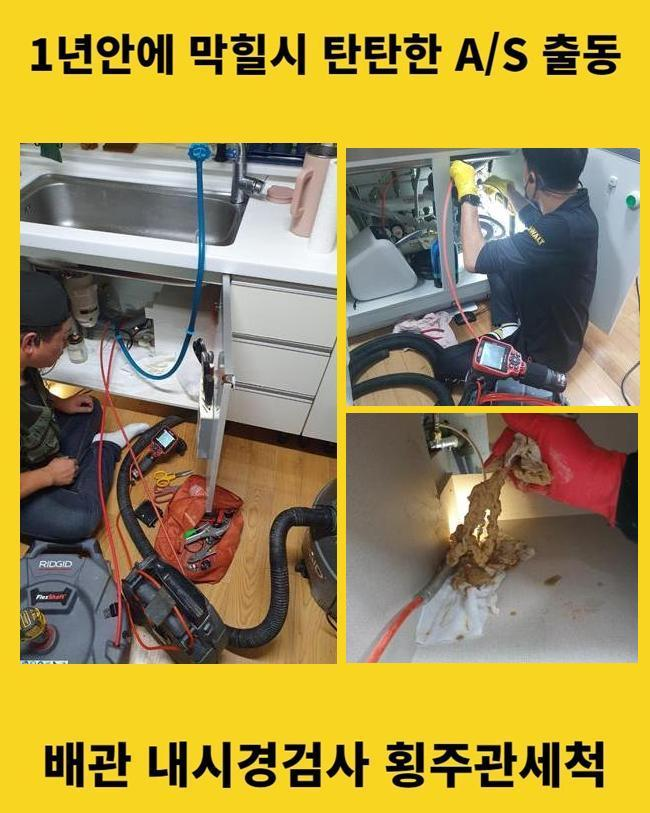
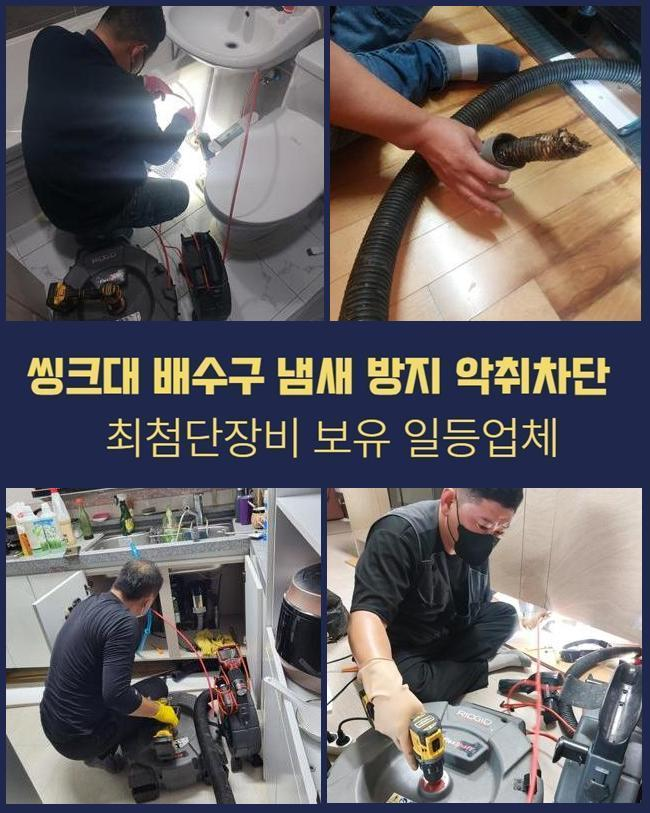
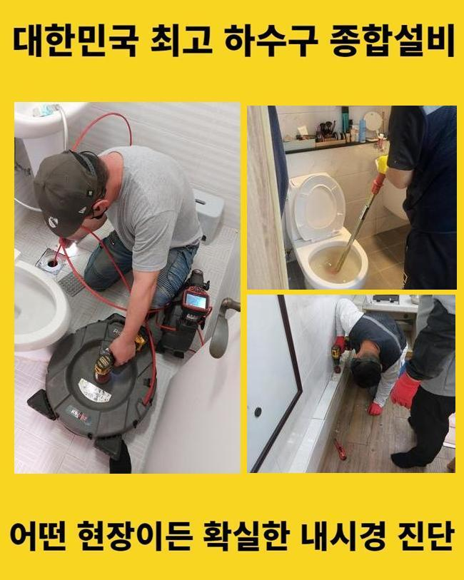
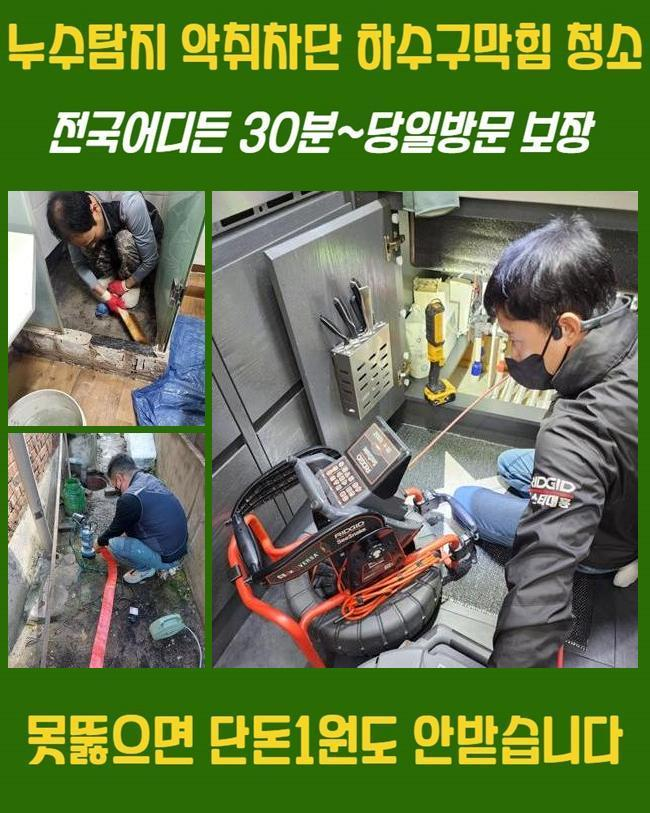
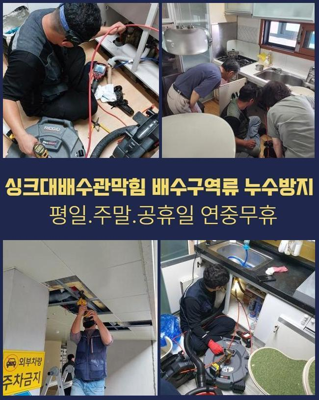
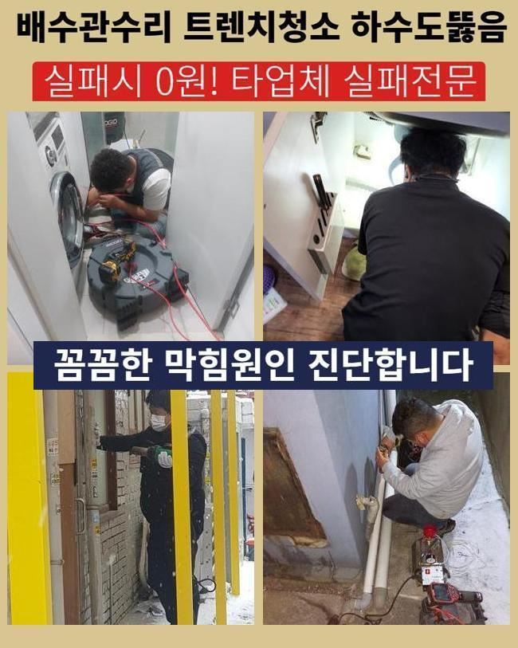
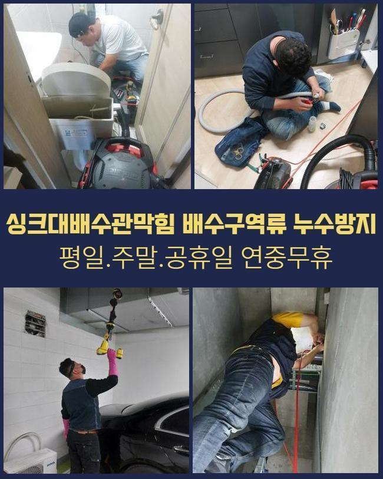

🏠 안양 석수동세탁기배수구막힘 하수관고압세척 설비공사
안양 배관막힘 전문 시공 후기

📋 작업 개요
- 위치: 안양
- 서비스 유형: 배관막힘, 누수수리, 역류해결, 뚫는업체, 배관청소, 고압세척, 설비공사, 악취차단
- 작업 일시: 2025. 1. 21. 13:02
- 업체명: 하수구수사대 (010-5615-2118)
🔍 문제 상황
안양 석수동세탁기배수구막힘 하수관고압세척 설비공사
금일엔 대형아파트 단지내에서 우수배수관이 막혀버리는 바람에 물이 역류해버린다는 전화를 받았어요
비가 내리면 우수파이프로 빠져나가지 못하고 반대로 넘쳐나서 환경이 지저분해지고 습기도 많아졌다 말씀하셨죠
3달 전쯤에도 흡사한 정황을 본적이 있었으며 최근 일주일간 강우량이 많았기에 더더욱 심각해졌다고 토로하셨죠
그것때문에 우수관 주변으로 구린내도 많아졌고 주민분들의 불편함도 증가하게 되었던거죠
관리를 즉각 시행해달라고 요청하셨고 저희팀은 재빠르게 출동준비를 이행하였죠
장소를 찾아보니 10분도 안되는 곳에 위치한 아파트였죠
손님분에게 방문드릴수 있는 시간을 말씀드리고 차량에 장비를 싣고 출발하였답니다
장소에 다다르니 분리수거장 근처에 우수설비가 있었죠
근처로 이동하니 물이 넘쳐흐른 자국이 많았고 앞에서 체크해보니 이를 치우기위한 청소용품이 준비돼 있었네요
역류현상이 심해지며 직원분들께서 밤낮으로 그것을 정리하셨다고 하네요
그랬음에도 역류는 나아지지 않았기에 신속한 정비를 요청하신 것이었죠

🔎 원인 분석
💡 전문가 진단: 정밀 진단 장비를 사용하여 슬러지의 고착 여부를 판명하고 타격/세척 작업을 실시했습니다.
우수관로는 본래 낮은곳으로 빗물 등이 집약되도록 설계돼야 하겠으나 이 현장은 주변부와 유사하게 건설이 마감되어 역류문제가 증가하게 되었답니다
이것들을 처리하려면 굴착업무가 요망되었으나 의뢰인분에게서는 그 부분은 나중에 생각해보자고 하셨고 우선 뚫음부터 해달라고 요청토로하셨죠
우수설비의 막힘양상을 직접적으로 검사해보니 나뭇가지들도 있었으나 물티슈와 같은 찌꺼기들도 굉장히 많았답니다
그것으로 관로가 막혀버렸고 역류문제가 붉어질 때까지 정황이 악화된것이죠
고객분에게 혹여 세대내부에서 우수설비로 생활하수를 배출할수있는 상태인지 여쭤봤는데요
1~2층 주민들이 해당배관을 활용하신다고 하네요
이와 관련하여 수차례 주의방송을 하였으나 온당하게 수행되지않는 상황이었죠
그러한 상황이 계속된다면 얼마안가 또 고장이 발현되기 쉽단걸 설명드렸으며 관계된 예방대책을 세워나가기로 결단하셨죠
우수배관을 열었더니 고인물이 제대로 흘러나가지 못하는것이 쉬이 확인됐어요
배수시설 주위에 오염물질들이 너무 많아서 작업에 돌입하기 수월치 않았어요
거기에 더해 관로속에 들어간 잔류물도 상당하였고 크기도 커서 간소한 장비로 처치하기엔 여의치 않았죠
이때문에 저희팀은 스프링장비를 동원하여 빠르게 정비하는 대책을 시작했어요
우수관주변이 넓지 않았고 비까지 내려 시공에 어려움이 있었는데요

🔧 작업 과정
그런 상황에서도 의뢰인분의 괴로움을 최소화시키기 위하여 바로 공정을 수행하였죠
내시경기기는 우수관로 내측을 관찰하고 이물수준을 간파하는데 핵심적 역할을 해주죠
이것을 활용해 우수관내부의 문제점을 정밀하게 파악가능하며 진단시간을 줄였답니다
그것과 동시에 스프링기기를 작동시켜 찌거기를 소멸시키는 업무가 단행되었습니다
우수관로의 사이즈가 작은 경우에 거름망 설치가 안되어 노폐물들이 쉬이 들어오는 정황이 많이 나타납니다
그런 경우에 잔재들이 누적되고 결과적으로 관이 차단되어 역류증세가 생겨나거나 악취가 발생할 확률도 높아지죠
이것을 사전에 차단하려면 주기적인 관리가 요망되고 쓰레기들이 침투하지 못하도록 거름장치를 설비하는 부분도 필요해요
그것들과 관련해서 의뢰인께 말씀드렸고 또한 사용빈도가 높은 배관일수록 더욱 신경쓸 필요가 있다는걸 강조하였죠
청소를 시행할 때에도 우수관 벽면에 크랙이 발생했는지 여부와 누수증세가 생길 가망은 없는지 철저하게 진단했어요
그러한 과정을 바탕으로 예상치못한 문제점을 방예하고 입주민들의 평안을 가져올수가 있는거죠
커다란 잔재들을 들어낸 다음에도 관내부엔 아직도 오염물질들이 체류중이었어요
그것을 처리하려 샤프트장비를 접목해보기로 하였죠
샤프트기기는 강하게 돌아가는 체인으로 관로면에 접착된 슬러지들을 파쇄하는 역할을 수행하고 강한 회전력을 바탕으로 말끔하게 침전물들을 없애나갈수 있어요
그리고 관로안쪽을 긁어내지 않아 안전히 사용가능하다는 장점을 가지고 있어요
보슬비가 멈추었고 우수관로 근방의 오물을 정리하기 위해서 석션기기를 통해 시공을 종료하였죠
샤프트기기로 분쇄한 성분을 수차레 석션기기로 빨아들이며 정체상황을 완벽히 해결해냈답니다
거주자분들의 고초를 최대한 감소시켜 드리려는 마음으로 끝까지 최선의 노력으로 일하였으며 파이프는 원래대로 유동성을 가진 모습으로 수리되었어요
이를 통하여 깔끔한 우수배관을 유지해나가는 일이 정말 중요하다는 점을 다시금 인지시켜 드렸어요
관이 막혀버린다면 간소하게 물고임으로 끝나는게 아닌 더욱더 심각한 상황으로 진행될수 있어 자주 세척하고 보존해나가야 한단걸 재차 강조드립니다
특히나 이곳은 우수배관의 시설물이 높게 위치하였기에 한층더 신경써서 관리해야 된다고 강조해서 설명드렸죠


✅ 작업 완료
고객님에게서는 배관 내시경 이것을 활용해 전체 시공 업무를 바로바로 보실수 있었으며 최종적으로 하수를 내려서 테스트를 진행하였어요
이러한 방식으로 아파트내의 우수파이프의 막힘을 정리하였고 역류증상까지 확실히 정리됐죠
신경쓰기 까다로운 우수관로나 기타 배관문제도 전문업체를 통해서 빈틈없이 검사하고 세척받아 보시길 바라요
고객님들의 가정에 문제가 안나타나기를 기원해요
혹여 역류등이 생긴다면 즉각적으로 연락부탁드립니다 재빠르게 출동하겠습니다




⚠️ 베란다 누수 및 방수 관리 방법
- ✅ 비가 많이 올 때 창틀 주변이나 아래층 천장에 얼룩이 생기는지 정기적으로 확인해 보세요.
- ✅ 우수관 주변 실리콘 마감이 들뜨거나 깨진 틈새가 있는지 손상 여부를 수시로 체크하세요.
- ✅ 베란다 바닥 타일의 줄눈(메지)이 소실되면 그 틈으로 물이 침투하여 누수가 유발됩니다.
- ✅ 누수 의심 증상 발견 시 방치하면 아래층 손실이 커지므로 즉시 전문가의 진단을 받으십시오.
💡 핵심 정리
- 확실한 장비 작업(내시경 점검 및 샤프트 스케일링)으로 원인을 뿌리 뽑습니다.
- 작업 후 1년 이내에 동일한 부위 재발 시 100% 무상 A/S 서비스를 보장합니다.
- 서울 · 경기 · 인천 전 지역에 24시간 언제든 긴급 출동할 수 있도록 항시 대기 중입니다.
❓ 자주 묻는 질문 (FAQ)
🚨 안양 배관막힘 문제로 고민이신가요?
정확한 원인 진단과 확실한 시공으로 재발 없는 해결을 약속드립니다.
24시간 긴급 출동 | 서울 · 경기 · 인천 전지역 | 1년 내 재발 시 무상 A/S